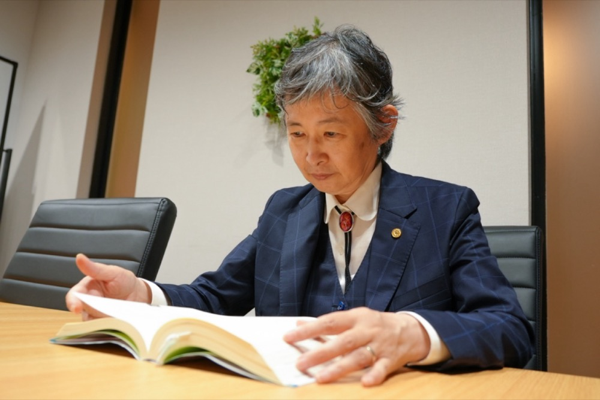
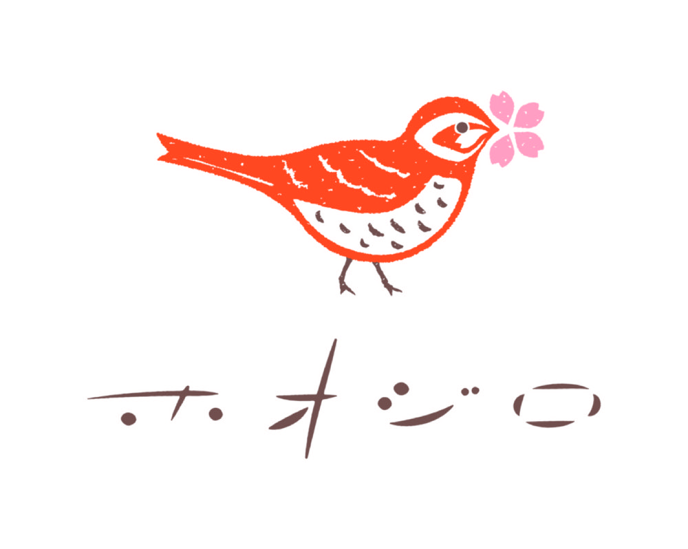

依頼者の思いを丁寧に汲み取る行政書士
日向 麻里Mari Hyuga
ホオジロ行政書士事務所 代表
東京都立大学理学部卒。システム開発会社、コンサルティング会社を経て、特許事務所勤務中の2004年に弁理士試験に合格。結婚と子育てを経て、自己実現と家庭両立を求め行政書士に転身、独立後はホオジロ行政書士事務所を設立。相続、成年後見、外国人在留資格申請、事業承継など多岐にわたる法務サービスを展開し、事業承継士としても活躍中。
企業サイトを見るTRACK 01
依頼者の思いを丁寧に汲み取る行政書士
法律や行政手続きというものは、確かに冷淡に見える。しかし、それを扱う人の中に温かみがあれば、人は救われるものである。書類ひとつにも人生が宿る。その生命を活かすのが行政書士の腕の見せどころだ。
千葉市若葉区の一角にあるホオジロ行政書士事務所。代表を務める日向麻里は行政書士として、外国人の在留資格申請、相続・遺言・成年後見、さらには中小企業向けの事業承継支援など、幅広い法務サービスを提供する。まるで多様な風景が一つのキャンバスに描かれるかのように、依頼者一人ひとりの思いを丁寧に拾い上げ、その一端を担う。
TRACK 02
「本当にやりたいことは何か？」
もともとは、国家資格である弁理士に合格し、知的財産の世界で輝かしいスタートを切った日向。しかし、当時の彼女は、特許事務所での業務に打ち込みながらも、どこか心に違和感を覚えていた。表面的な成功や安定したキャリアの先に、真の自分自身の姿が見えなくなってしまったことに気づいたのである。
転機は、結婚という人生の大転機と共に訪れた。結婚し、母となったことで、家庭という新たなステージに踏み込んだ日向は、同時に自らの働き方や生き方にも問いを投げかけるようになった。かつての彼女は、会社員として13年半、さらにはコンサルティングファームで1年半の経験を積んだ。しかし、家族との時間、そして自分自身の内面との対話を重ねる中で、「本当にやりたいことは何か？」という問いが彼女の心に深く根付いていった。
仕事に対する情熱が薄れ、精神的な限界を感じた。しかし、どん底に近い状態になりながらも持ち前の胆力と周囲の支えで乗り越え、夫の助けを得ながら独立。彼女は再び自分の力で未来を切り拓く道を選んだのである。


TRACK 03
専門性＆柔らかな対応
ホオジロ行政書士事務所は、単に法律手続きの代理業務を行うだけではない。依頼者一人ひとりの不安や疑問に寄り添い、心のサポートも惜しまない。外国人のビザ申請や企業の事業承継支援、そして複雑な相続手続きなど、各分野での専門的な知識と経験は、彼女ならではの強みであり、依頼者に安心感を提供する最大の武器である。
また、彼女の丁重で穏やかなコミュニケーションからは、依頼者が何でも話せるような温かみを感じさせ、その信頼は日増しに高まっている。日向自身、日々の業務の中で「お客様の最高のパートナーになる」という信念を貫いており、時には困難な状況にも正面から向き合い、解決への道筋を探し続ける。忙しさに追われる現代社会の中で、依頼者にとって「安心できる存在」としての役割は、計り知れない価値を持つ。